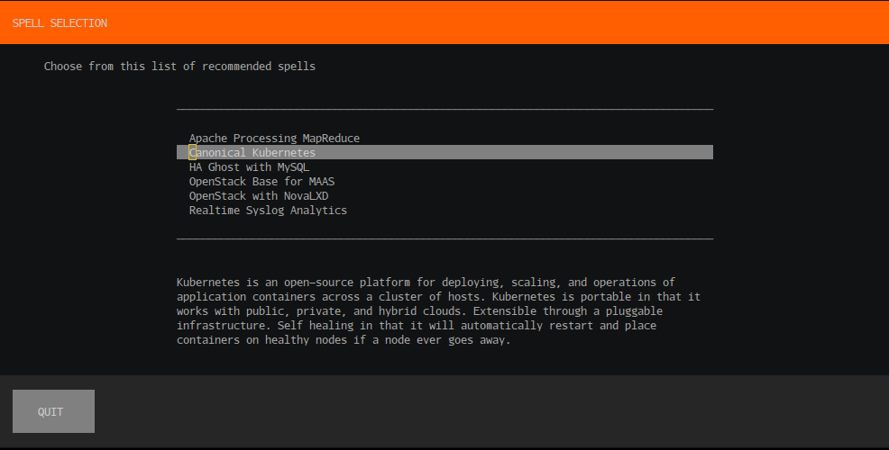
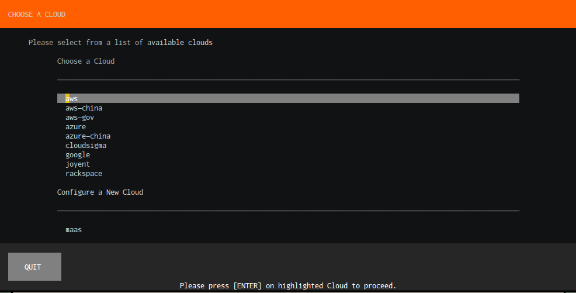
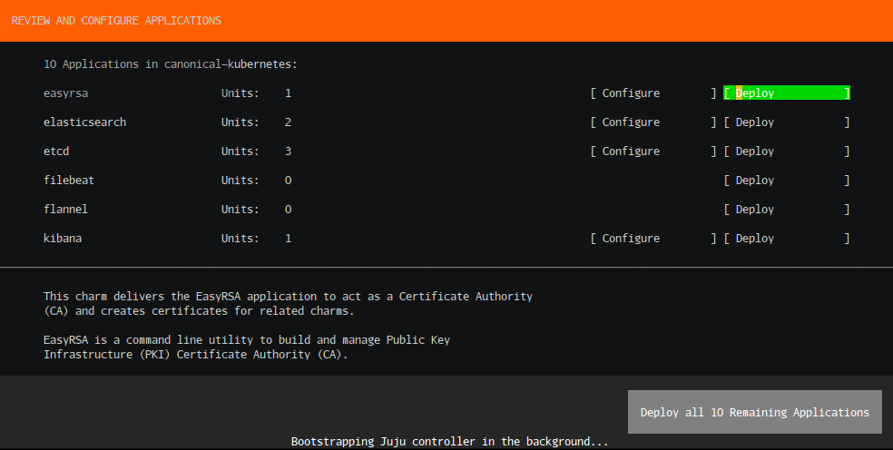
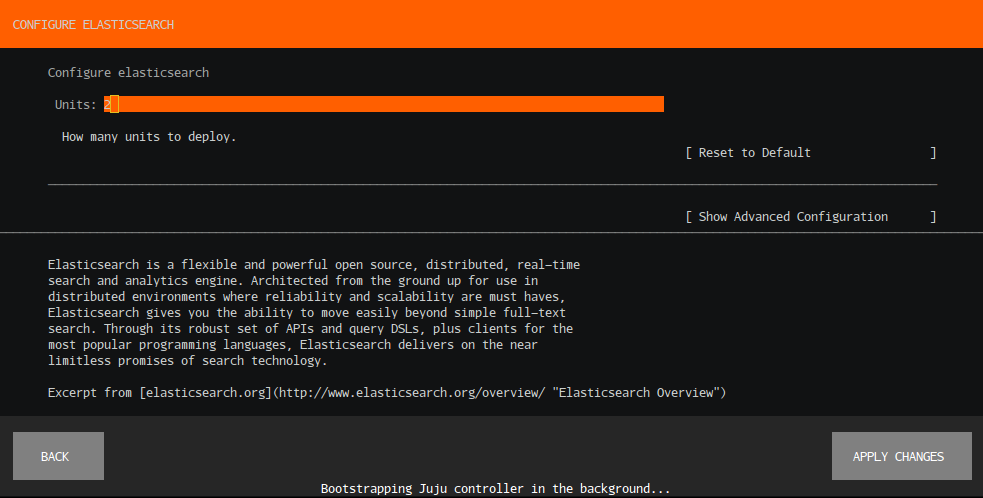
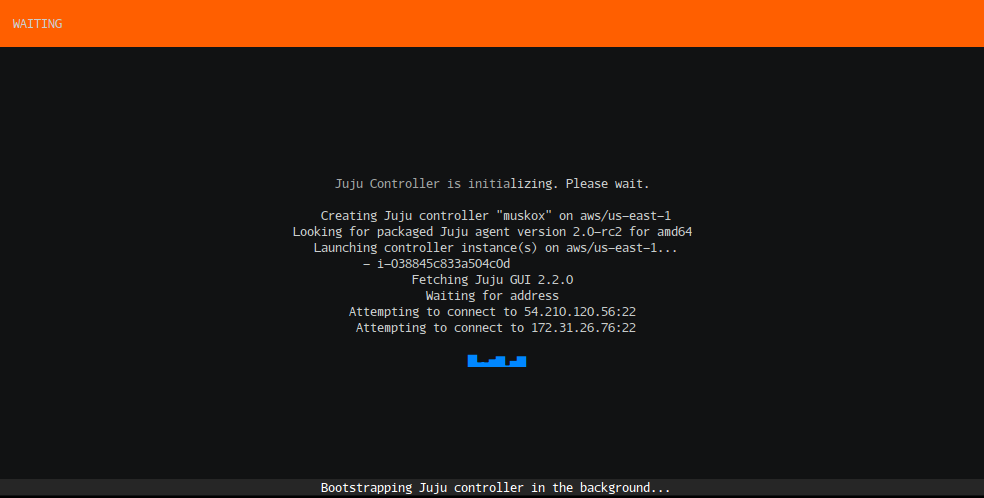
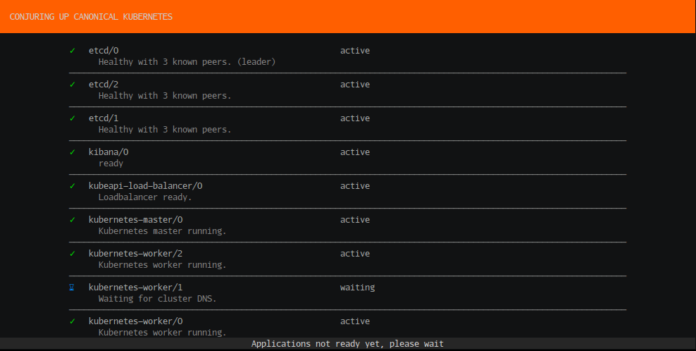
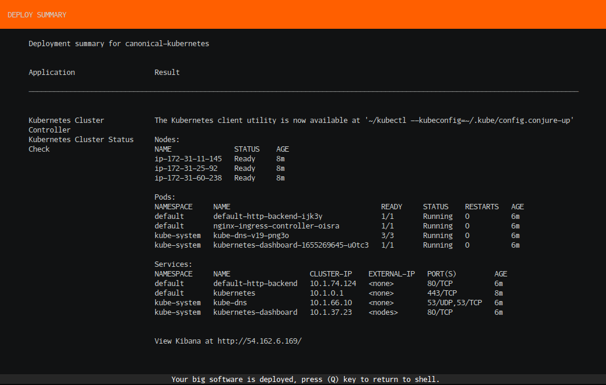

conjure-up User Manual
conjure-up is a thin layer spanning a few different underlying technologies - Juju, MAAS, and LXD.
conjure-up provides you with a streamlined, turnkey solution. In order to provide that streamlined approach, conjure-up makes use of processing scripts. These scripts are executed at 3 different times in the deployment, just after a Juju bootstrap, just before a Juju deploy, and right after a Juju deploy.
Processing scripts give you the flexibility to alter LXD profiles in order to expose additional network interfaces to Neutron services, import images into Glance once the service is available, or notifying the Deployment status screen that your solution is ready and can be viewed at a specific URL.
With these powerful concepts you can package up the solution that can then be provided to coworkers who can easily deploy your solutions in any Public Cloud, MAAS, or LXD.
Getting Started
Hardware Requirements
Public Cloud
For Public Cloud deployments hardware requirements(constraints) are handled by the Spell authors and will automatically be allocated during deploy.
Localhost
For localhost deployments the following setup is recommended:
-
2 cores
-
16G RAM
-
32G Swap
-
250G SSD with a seperate block device for ZFS. Our recommendation for that device is 100G.
Installing conjure-up
conjure-up is available on both Ubuntu Trusty 14.04 LTS and Ubuntu Xenial 16.04 LTS
sudo snap install conjure-up --classic
Note: If above command fails you’ll want to make sure snapd is installed with apt-get install snapd
Ubuntu Trusty 14.04
Trusty users will need to perform some additional steps prior to getting the snappy version installed.
To get a working conjure-up install on Trusty, the following needs to be run:
sudo apt-get install snapd sudo groupadd lxd && sudo usermod -a -G lxd $USER sudo reboot sudo snap install conjure-up --classic
Betas, Development Versions
You can always test out the latest and greatest (though not necessarily stable) version with:
sudo snap install conjure-up --classic --edge
... for the very latest version (expect bugs), or:
$ sudo snap install conjure-up --classic --beta
for the latest beta.
If you have conjure-up already installed, you can update to a different snap channel with:
sudo snap refresh conjure-up --classic --edge
or
sudo snap refresh conjure-up --classic --beta
Users of LXD
conjure-up currently only supports running a single installation of LXD. Meaning, systems with LXD pre-installed like Ubuntu Xenial Server should not have the snapped version of LXD installed.
Note: If you’ve never done anything with snappy before feel free to skip this section.
You can opt to use either or as conjure-up will support LXD versions 2.0.8 and above. To verify that you do only have a single installation of LXD do the following:
Check that the output from:
snap list
does not have lxd listed:
Name Version Rev Developer Notes core 16.04.1 888 canonical -
If lxd is listed in the above output, make sure you do not have the Debian package installed by running :
dpkg -l lxd
In order to fix this problem you’ll want to remove one of those:
For the snap version:
sudo snap remove lxd
For the Debian package:
sudo apt-get remove lxd lxd-client sudo apt-get purge lxd
Summon a Spell
To deploy solutions such as OpenStack you will summon a spell:
conjure-up openstack
To see a list of all available spells run:
conjure-up
Note: Several remote locations are supported - please see Advanced Spell Summoning for further details
Uninstalling
To remove deployments:
conjure-down
To uninstall conjure-up itself:
sudo snap remove conjure-up
Spell Walkthrough
Follow through our screenshot walkthrough of deploying The Canonical Distribution of Kubernetes, Enterprise Kubernetes, anywhere.
Spell Selection
Initially, you will be provided with a list of available spells that can be deployed. For this walkthrough we will select Canonical Kubernetes.
Note: Once a Spell is selected you can view its README at any time by pressing R
Figure 1: Spell selection

Cloud Selection
Next, a list of publicly supported clouds will be presented.
Figure 2: Cloud selection

Application List
Once a cloud is selected you will be presented with a list of applications that make up the Canonical Kubernetes deployment. This screen allows you to deploy each application individually or make additional configuration changes to the selected application (covered in Application Configuration).
Figure 3: Application list

Application Configuration
In the configuration screen for the application you have the ability to configure certain aspects prior to deployment. For example, in Figure 4 you can increase the amount of units to deploy of Elasticsearch.
Figure 4: Application Config

Bootstrap
Once the applications are deployed and if no previously bootstrapped cloud exist you will be presented with a wait screen that gives you the status of the current bootstrap.
Note: If an existing cloud is already bootstrapped you will not see this view.
Figure 5: Bootstrap Wait Screen

Deployment Status
After the bootstrap process is complete the applications will begin their deployment tasks. This includes installing the necessary bits onto the allocated machines, setting their relations between the applications, and verifying that each application starts successfully. You’ll notice that once the applications are ready they will have a green checkmark beside them.
Figure 6: Deployment Status Screen

Additional Application Tasks
This is the real benefit of conjure-up. These additional steps encapsulate the operational tasks to perform to your deployment in order to start using your big software. In Figure 7 you’ll notice that this walks you through downloading the required kubectl tool to work with your new cluster. Additionally, it’ll contact your cluster and grab the necessary information to display for you on the Summary.
Figure 7: Steps Configuration

Summary
Finally, the summary screen presents you with all the information necessary to access and start using your big software. In Figure 8 we provide you with how to access and use your kubectl binary along with the Kubernetes cluster-info and how to access the Kibana dashboard for viewing things such as Filebeat and Topbeat.
Figure 8: Summary 
Pressing Q will return you back to the shell with your deployment left intact.
Advanced Spell Summoning
conjure-up includes several spells in addition to supporting summoning spells from several remote repositories and from a local directory on your filesystem.
GitHub/BitBucket
Not quite ready to push your spell to the charm registry? That’s ok, simply push your spell to GitHub and conjure-up can deploy from there:
conjure-up battlemidget/ghost
This would pull from GitHub repo https://github.com/battlemidget/ghost
Remote Web Server
conjure-up will also support downloading directly from a webserver. For example, if you have your spell zipped up and stored at http://example.com/my-conjure-spell.zip you could install it like so:
conjure-up http://example.com/my-conjure-spell.zip
Local Filesystem
Passing in either the directory path of the spell or if the current working directory is a spell:
conjure-up ~/spells/openstack/openstack-novalxd
Or from cwd
~/spells/openstack/openstack-novalxd> conjure-up .
Running in Headless Mode
conjure-up is meant to be a teaching tool in addition to a full blown application deployment tool. By Default conjure-up will walk you through the entire deployment process and help you understand what it is you are deploying.
Where this doesn’t make sense is if you are wanting to deploy your application in an automated fashion. For example, integrating the deployment with a Jenkins CI server.
For these cases conjure-up provides a headless mode.
To deploy in a headless mode you’ll need to have credentials defined if deploying to a Public Cloud or make sure LXD is configured if deploying to Localhost.
To deploy OpenStack to a Localhost provider:
conjure-up openstack-novalxd localhost
If we want to deploy to a cloud like AWS:
conjure-up canonical-kubernetes aws
Note: Keep in mind you’ll need to have credentials defined, see Juju credentials for more details.
Customizing deployment phases
Currently, if no controller or model is defined during a headless install they will be auto-generated based on the spell and cloud chosen.
However, those controllers and models can be defined to better reflect your deployment preferences. For example, you have a controller sitting in a data center named dc1 and it houses 3 deployments named test-deploy, stage-deploy, and production-deploy.
To accomplish a naming strategy to reflect this design you can pass in a third and fourth argument to conjure-up to define those phases:
conjure-up canonical-kubernetes aws dc1 test-deploy conjure-up canonical-kubernetes aws dc1 stage-deploy conjure-up canonical-kubernetes aws dc1 production-deploy
Customizing headless mode
Post deployment actions are exposed to the environment via environment variables. Some actions may require you to input data depending on what is required. An example would be input the path of your public ssh key so that your OpenStack deployment can make those available to the compute nodes.
To see what environment variables you can set prior to running a headless mode install, run the following:
conjure-up --show-env openstack-novalxd localhost
You should see ouput similar to:
Available environment variables: +--------------+-------------------+---------------------------------------------------------+ | ENV | DEFAULT | | +--------------+-------------------+---------------------------------------------------------+ | SSHPUBLICKEY | ~/.ssh/id_rsa.pub | Import SSH keypairs into OpenStack. This allows you to | | | | access the newly deployed instances via SSH with your | | | | current user. If you are not sure about the location of | | | | a ssh key leave it as is and we will create one | | | | automatically. | +--------------+-------------------+---------------------------------------------------------+ See http://conjure-up.io/docs/en/users/#running-in-headless-mode for more information on using these variables to further customize your deployment.
In order to change it from it’s default of \~/.ssh/id_rsa.pub you would simply do:
SSHPUBLICKEY=/home/bob/my-ssh-key.pub conjure-up openstack-novalxd localhost
Advanced Usage/Additional Tips
Running conjure-up remotely
If you ssh into a seperate machine to run conjure-up and you deploy spells
such as openstack-novalxd to localhost and you want to be able to access
things like the openstack dashboard.
The simplest way to accomplish this is on your local machine run the following:
sudo apt install sshuttle sshuttle -r <remote-host-ip> <subnet-of-localhost-deployment>
The subnet of localhost is going to be what conjure-up configured the network bridge for. By default this is set to 10.0.8.1/24. Lets also say the remote host’s ip is 172.16.0.5 so you’ll want to do the following
sshuttle -r 172.16.0.5 10.0.8.1/24 [local sudo] Password: client: Connected.
It will then ask you to enter your sudo password and once complete will let you know that the sshuttle is connected. From there you can open your web browser and access the horizon dashboard as if it was running on your local machine.
Assuming the openstack-dashboard was deployed to a machine whose ip is 10.0.8.15, you could run:
xdg-open https://10.0.8.15/horizon
Troubleshooting
Logging
Logs are written to journald by default. Logs
may be viewed with the command:
journalctl |grep conjure-up
Note: There is also a log file that is written to \$HOME/.cache/conjure-up/conjure-up.log
Unicode
If the system running conjure-up does not have its locale defined to
UTF-8 a failure will occur similar to:
UnicodeDecodeError: 'ascii' codec can't decode byte 0xe2 in position 2201: ordinal not in range(128)
To fix you will need to set your locale accordingly. Run the command:
locale
to view current settings...
LANG=en_US.UTF-8 LANGUAGE=en_US LC_CTYPE="en_US.UTF-8" LC_NUMERIC="en_US.UTF-8" LC_TIME="en_US.UTF-8" LC_COLLATE="en_US.UTF-8" LC_MONETARY="en_US.UTF-8" LC_MESSAGES="en_US.UTF-8" LC_PAPER="en_US.UTF-8" LC_NAME="en_US.UTF-8" LC_ADDRESS="en_US.UTF-8" LC_TELEPHONE="en_US.UTF-8" LC_MEASUREMENT="en_US.UTF-8" LC_IDENTIFICATION="en_US.UTF-8" LC_ALL=
Common Spell Problems
Applications in Error state
One of the biggest reasons why applications will error out during deployment is due to not having enough disk space available. Please make sure you meet the Hardware Requirements prior to deploying spells.
LXD
Failed deployments if IPv6 is enabled
Currently conjure-up does not support the use of IPv6. If you are running LXD and have a bridge that has IPv6 enabled conjure-up will fail and give you an explanation as to why and information for disabling IPv6.
Disable IPv6 on LXD versions 2.2 and below
LXD version 2.0 is the default version on Ubuntu Xenial 16.04. To disable IPv6
you’ll need to edit /etc/default/lxd-bridge and make sure the following
values are reflected below:
# IPv6 ## IPv6 address (e.g. 2001:470:b368:4242::1) LXD_IPV6_ADDR="" ### IPv6 CIDR mask (e.g. 64)LXD_IPV6_MASK="" ### IPv6 network (e.g. 2001:470:b368:4242::/64)LXD_IPV6_NETWORK="" ### NAT IPv6 trafficLXD_IPV6_NAT="false"
Disable IPv6 on LXD versions 2.4 and above
To disable IPv6 on your LXD bridge (lxdbr0 by default) run the following:
lxc network set lxdbr0 ipv6.nat false lxc network set lxdbr0 ipv6.address none
OpenStack
Deployment gets part way through and seems to hang under VSphere
The most common cause of a "hung" deployment running inside VSphere is network related. The most common solution is to enable promiscuous mode in your virtual switch, Please see the VMware KB article on enabling that feature.
config-changed error for neutron-gateway
This error can happen if you’ve not set your bridge-mappings and data-port during the Application List portion of the deployment.
Please see the Neutron Gateway charm documentation under Port Configuration for more information.